Chat
Direct access to leading LLM models through a clean, intuitive chat interface. Users could converse naturally, without needing to understand the technology underneath—just the results it could produce.
From idea and early wireframes to a multi-sector AI productivity platform—built, tested, and evolved over two years.

The founder of Rolai came to us with a compelling premise: an AI-powered productivity platform built for small businesses. The core proposition was three-layered—a chat interface for interacting with leading LLM models, a curated library of ready-to-use prompts for everyday business tasks, and a Knowledge Store that would act as context to make every response more accurate and relevant.
What made this engagement distinctive from the start was the honest uncertainty around it. We were designing for a broad audience in a space most users weren't yet familiar with. There was no validated playbook. The founder wasn't locked into a single user group, which meant we had to treat every feature decision as a hypothesis—and every client conversation as a research opportunity.
With the average user not yet familiar with the capabilities of AI, our process centered on building a working prototype quickly—so people could see, not just imagine, what was possible.
We began with foundational discovery, conducting competitor research and reviewing the existing work. The client had created a few initial wireframes, which gave us a clear understanding of the requirements and a solid starting point for the project.

A traditional, structured design process wasn't the right fit for a product with this much ambiguity. Instead, we built a tight, adaptive loop—one that could turn a founder's client conversation into a live feature in days, not weeks.
The goal wasn't to design the perfect product upfront. It was to get something real in front of real people as fast as possible—and let their reactions shape what came next.
Founder meets a prospect, identifies a need or friction point in their workflow.
Build the feature in days. Move fast, stay functional, keep it demoable.
The team uses the feature internally while the founder demos it to prospects.
Fix and adapt based on reaction. Polish what lands. Shelve what doesn't.
The initial platform was built around four interconnected capabilities, each designed to make AI genuinely accessible and useful for small business users who had never thought of themselves as "AI users."
Direct access to leading LLM models through a clean, intuitive chat interface. Users could converse naturally, without needing to understand the technology underneath—just the results it could produce.
A curated collection of ready-to-use prompts covering the most common day-to-day business tasks. Built for users who didn't know where to start, and powerful enough for those who did.
A contextual layer that gave the platform its accuracy advantage—users could upload their own materials and connect external sources so every AI response was grounded in their specific business reality.
As the platform matured, AI agents allowed users to delegate more complex, multi-step tasks—extending the core chat and prompt capabilities into more autonomous, reliable workflows.
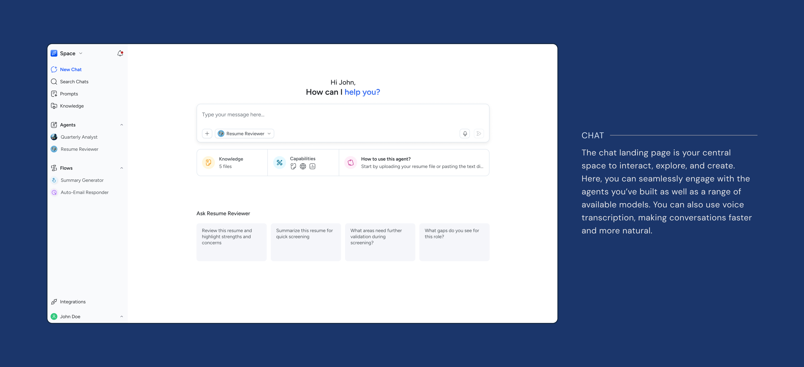
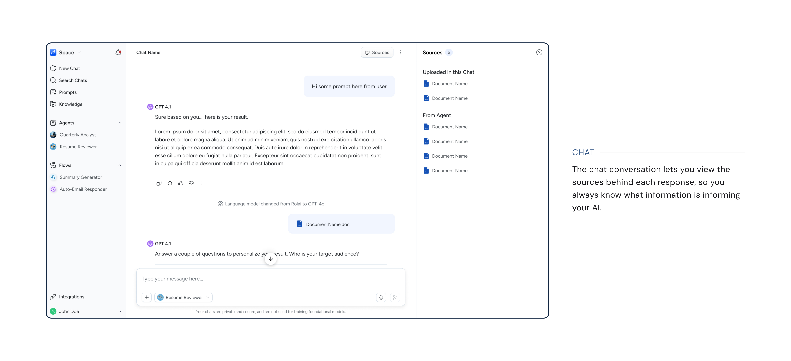
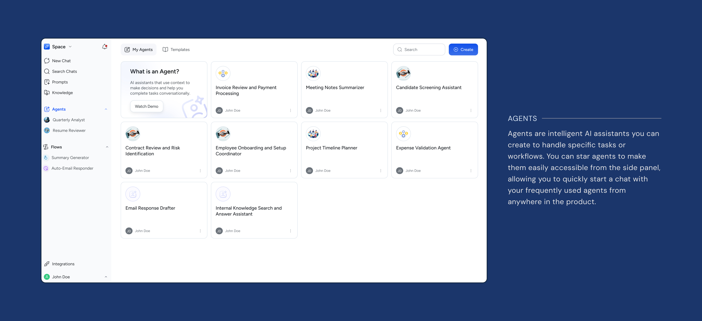
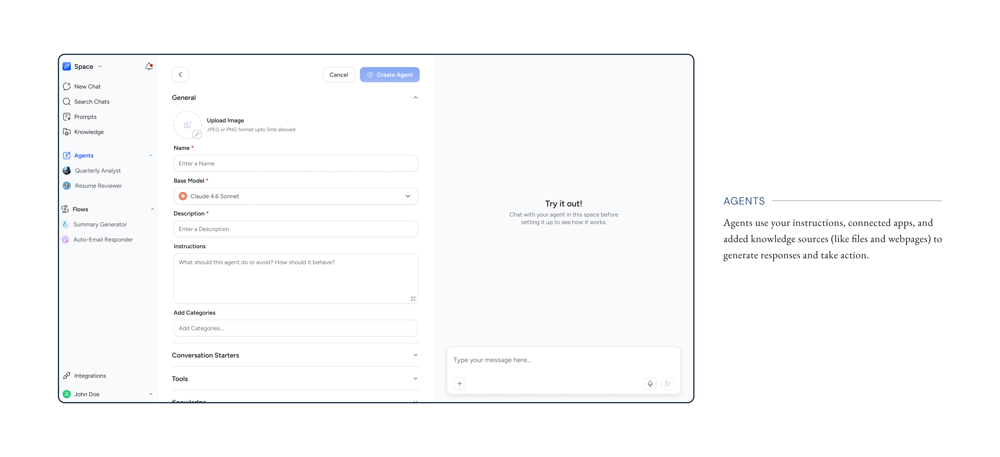
The basic platform was working—but a new client engagement forced us to think at a different scale. A mortgage company came to us with needs that went far beyond chat and prompts. They needed to batch-process hundreds of PDFs, extract specific data fields, auto-fill forms, and operate through a custom interface built for their exact workflow. In response we built:
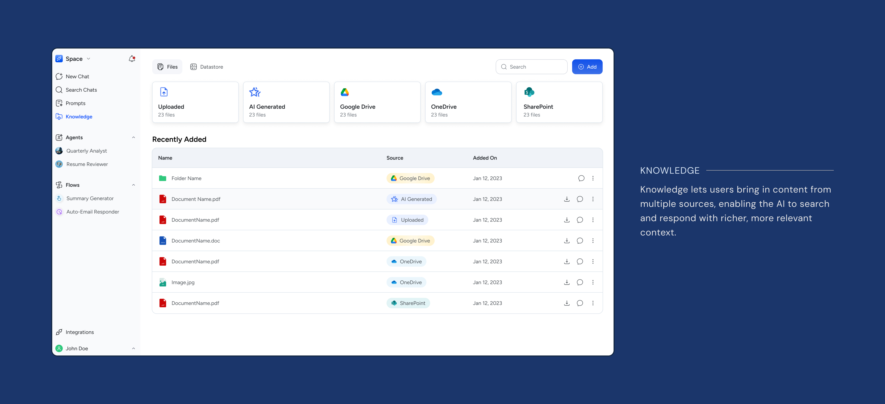
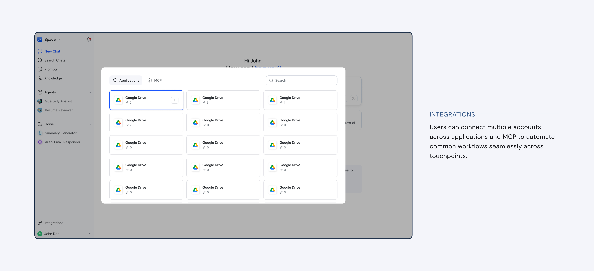
Flows started as a client-specific solution. Then we asked the harder question: what if every client could use them? That question—and a significant technical challenge that followed—led to two pivots that fundamentally changed the platform.
We fleshed out Flows from a chain of prompts into a full automation engine—sequences of tasks spanning multiple applications, triggered by events, schedules, or manual action. A client-specific tool became a platform-wide capability.
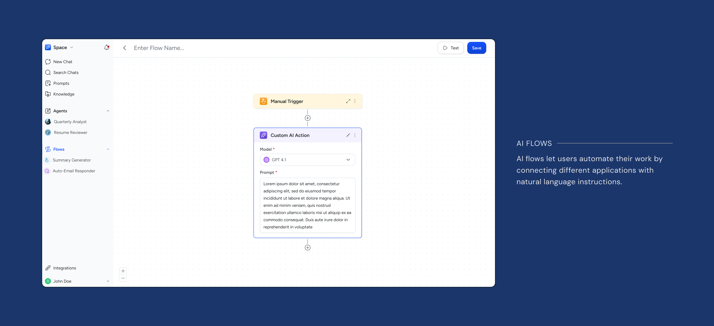
AI-powered flows—where AI interpreted natural language instructions at runtime—introduced hallucinations, misinterpretations, and hours of debugging. We rebuilt them with deterministic logic: user-defined, predictable, and reliable.
While deterministic flows ensured reliability, the user experience of building those flows was lacking. We recognised the need to enable AI-assisted flow creation so users wouldn't have to bear the burden of learning how to build them themselves.
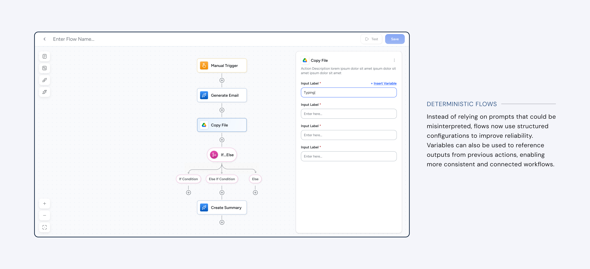
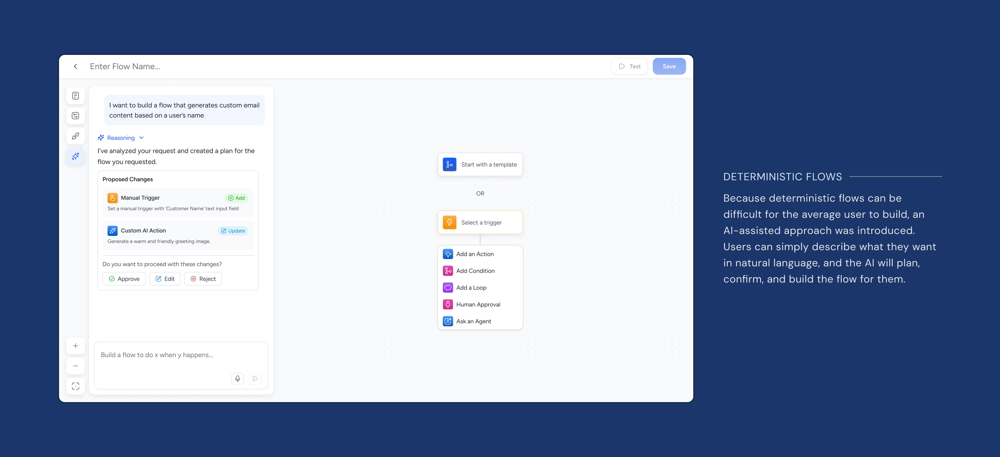
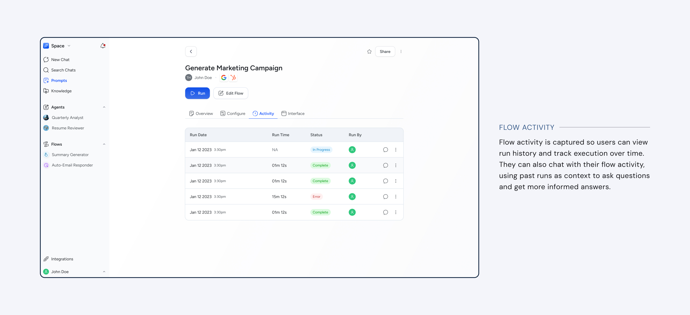
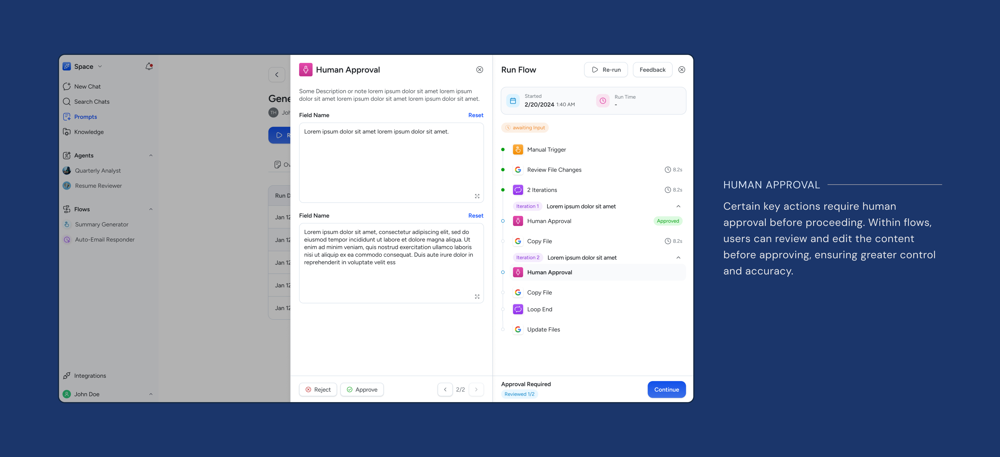
After two years of rapid iteration, the platform had grown from an idea and initial wireframes into a live, multi-sector AI productivity tool with happy users reporting real, measurable time saved.
The platform expanded beyond its initial small-business focus to serve clients across multiple industries—each engagement broadening the platform's capabilities rather than fragmenting them.
Users across sectors reported meaningful, measurable time savings as a direct result of using Rolai—validation that the platform was solving real problems, not just demonstrating AI novelty.
Whether you're launching a new product, rethinking an existing one, or need a design partner who can move fast without losing quality—I'd like to hear about it.